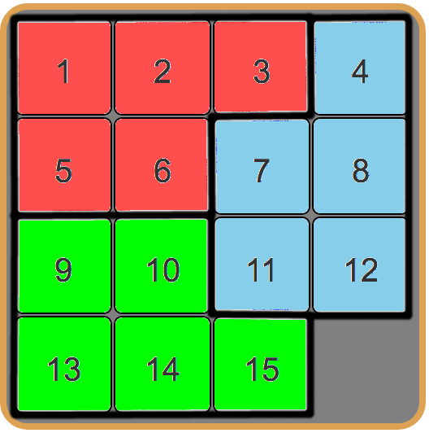
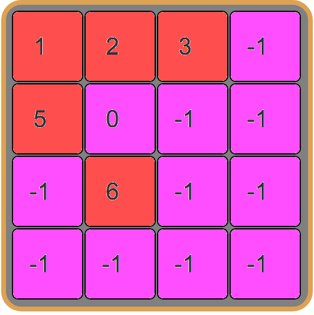

The n-puzzle is a sliding puzzle that consists of a frame of numbered square tiles in random order with one tile missing. The object of the puzzle is to place the tiles in order by making sliding moves that use the empty space.
All presented alogorithms work with graph search.
Each vertex represents a new state of the field as 2D array with (i,j) combination:
(0,0) (0,1) (0,2)
(1,0) (1,1) (1,2)
(2,0) (2,1) (2,2)
A* and IDA* algorithms use heuristic function to estimate the current field. They add this value (H) to the number of moves already made (G) and get final score (F). Evaluation (heuristics) is necessary to speed up the search for a solution.
Heuristics (H) is a function that takes the current state of the field and estimates its cost (moves needed to solve it) compared to the solution state.
Heuristics are divided into two types:
Admissible - find the most optimal solution (for a minimum number of moves);
Not admissible - find not the optimal solution, but can speed up the search.
To become admissible heuristic must return value not bigger then needed to solve the puzzle.
Manhattan distance is one of the most powerful heuristics. It is the sum of the moves necessary to place each tile at its goal place except the blank tile.
For each tile we have (now - where the tile is now, goal - where the tile should be):
H += abs(now[ i ] - goal[ i ]) + abs(now[ j ] - goal[ j ])
Let's count distance for tile 3 in the example:
Tile 3 is on position (2,0) and it's goal position is (0,2), so we have: h = abs(2 - 0) + abs(0 - 2) = 4.
General evaluation of this field: H = 10.
This is an auxiliary heuristic for the Manhattan distance. Two tiles ‘a’ and ‘b’ are in a linear conflict if they are in the same row or column, also their goal positions are in the same row or column and the goal position of one of the tiles is blocked by the other tile in that row(column).
As we know that heuristic value is the value that gives a theoretical least value of the number of moves required to solve the problem we can see that one linear conflict causes two moves to be added to the final heuristic value(h) as one tile will have to move aside in order to make way for the tile that has the goal state behind the moved tile and then back resulting in 2 moves which retains the admissibility of the heuristic.
In the example we see that tile 4 and tile 1 are in a linear conflict since we see that tile 4 is in the path of the goal position of tile 1 in the same column.
General evaluation of this field: H = 10(manhattan) + 2 = 12.
While working on this project, I accidentally made a mistake while writing a linear conflict and did not take into account the condition that goal positions of tiles must be in the same row or column. But when I noticed and corrected the error, I realized that the 15-puzzles began to be solved more slowly (noticeably), although for a smaller number of moves. So I decided to leave this heuristic as an example not admissible.
So the heuristic works like this: two tiles in a conflict if the one that is before (i or j is closer to 0) is greater than the second.
As example we have tiles 5 (0,1) and 2(0,2) => 5[j] < 2[j] and 5 > 2. General evaluation is 12.
This is a simplified version of the Manhattan distance. Instead of counting the distance of tile to the final position, we for every tile incrementing h if tile is not in his column or line.
In our example we have h = 8.
The fastest and cheatest heuristic. The bottom line is that we divide the field into different parts that do not intersect each other. Then, for each part, we do not take into account all the other tiles and using Breadth First Search, we find all possible combinations of their placement on the field ((n^2)! / (n^2 - pattern_len)!) with a cost estimate. In example below all combo = (16! / (16 - 5)! = 524 160.

In this example (which I used in the code), we divide the field into three equal parts - [[1, 2, 3, 5, 6], [9, 10, 13, 14, 15], [4, 7, 8, 11, 12]]. The most popular databases is this, 6-6-3 and 7-8. The 7-8 combination is the fastest but it will take a lot of memory.

So we start from the initial state and begin to change the empty tile with all possible. When replacing an empty tile with one of the tiles of the pattern, we add 1 to (G), otherwise we do not add anything. For example above, the cost g will be 1. Then we hash the current state of the field and use it as a key for our database, in this key we save the cost(1).
Hash example: if tile is '-1' or '0' we add '0' to our hash, else we add tile number. Then you could save your databases in files which you will use later.
Then, during solving the puzzle, for each pattern we hash our field (for each pattern separately) and summarize their values.